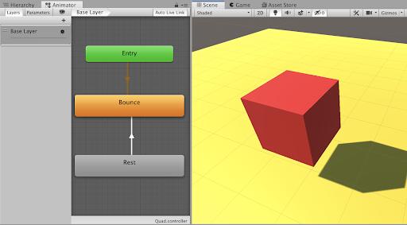

Parameters
| stateName | The state name. | |
| stateNameHash | The state hash name. If stateNameHash is 0, it changes the current state time. | |
| layer | The layer index. If layer is -1, it plays the first state with the given state name or hash. | |
| normalizedTime | The time offset between zero and one. |
Description 描述
Plays a state.
When you specify a state name, or the string used to generate a hash, it should include the name of the parent layer. For example, if you have a Run state in the Base Layer, the name is Base Layer.Run.
The normalizedTime parameter varies between 0 and 1. If this parameter is left at zero then Play will operate as expected. A different starting point can be given. An example could be normalizedTime set to 0.5, which means the animation starts halfway through. If the transition from one state switches to another, it may or may not be blended. If the transition starts at 0.75 it will be blended with the other state. If no transition is set up then Play will continue to 1.0 with no changes.

The following example script animates a cube.
This cube has two Animator states called Rest and Bounce. An empty animation is played in the Rest state. When the Space key is pressed the cube switches into the Bounce state. This causes the cube to jump up and down twice. The cube then returns to the Rest state. Because Bounce is selected from the Animator.Play script, no Transition is needed. However the return from Bounce to Rest does have a Transition. Has Exit Time is ticked to make Bounce last for its one second. Attach this script to the GameObject you want to animate.
using UnityEngine;
// Press the space key in Play Mode to switch to the Bounce state.
public class Move : MonoBehaviour { private Animator anim;
void Start() { anim = GetComponent<Animator>(); }
void Update() { if (Input.GetKeyDown(KeyCode.Space)) { if (null != anim) { // play Bounce but start at a quarter of the way though anim.Play("Bounce", 0, 0.25f); } } } }